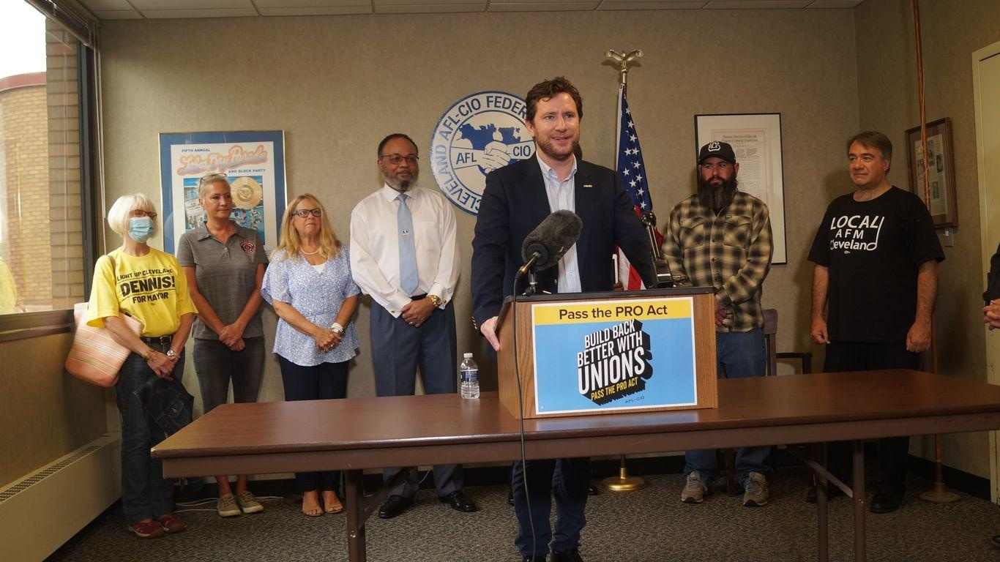

North Shore labor group appoints interim secretaryLeonard DiCosimo, the president of the Cleveland Federation of Musicians, has been named the interim executive secretary of the North Shore Federation of Labor. Driving the news: North Shore's board chair, Shari Obrenski, confirmed to Axios that the board appointed DiCosimo Wednesday. - He will serve in the role until a permanent secretary is elected at the end of the calendar year, she said. Why it matters: North Shore is Cleveland's largest labor organization, representing close to 85,000 members across 150 unions. - The board fired Dan O'Malley from the executive secretary position last month after he put personal expenses on the company credit card and failed to reimburse the organization for those costs. The latest: O'Malley is appealing his termination. - O'Malley says he has tendered payment of $2,300 to North Shore, which he believes "exceeds the amount required" to make them whole. - In a letter he sent to North Shore delegates Wednesday, he raised concerns about a "lack of transparency and due process" during an internal investigation. What they're saying: He argued that the sustained charges against him, related to personal expenditures on the company credit card, were the result of poor record keeping on his part and a lack of established protocols. - "[They] were neither malicious nor with intent to conceal anything from the Federation or the workers we represent," he wrote. "To the extent that mistakes were made, they were honest mistakes, and I have taken total responsibility for them from the very beginning of this process." What's next: Roughly 400 delegates will vote June 14 on whether to reverse the board's decision, but O'Malley told Cleveland.com that he may move on from the organization, regardless of the outcome. More Cleveland stories No stories could be found |
 |